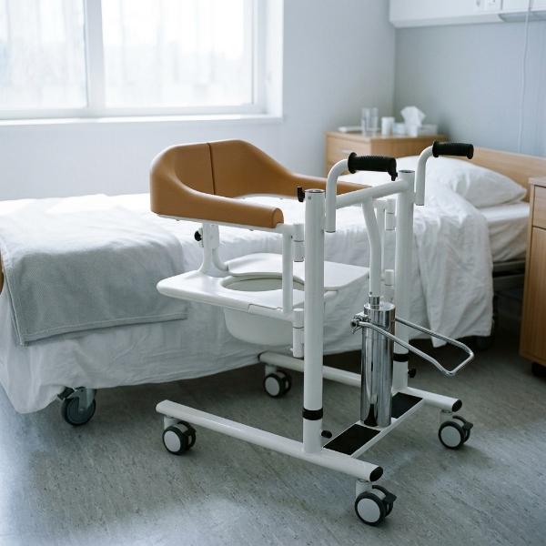
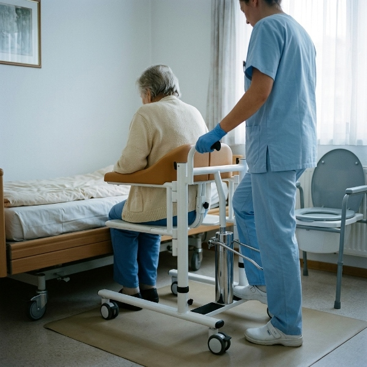

What is a patient lift? Types, uses, and how they work
If you are new to patient handling equipment, the terminology is the first hurdle: patient lift, patient lifter, patient hoist, transfer chair — they overlap and get used interchangeably. This guide clears up what a patient lift actually is, the three types, what each is used for, and the specs that matter when you are the one writing the purchase order.
What's in this guide
- What a patient lift is — and how it relates to "transfer chair," "patient lifter," and "patient hoist"
- How a patient lift works, in plain terms
- The 3 types by drive mechanism — manual, hydraulic, electric — and which fits which setting
- What a patient lift is actually used for (the specific transfers it replaces)
- The 5 specs to read first on any spec sheet, before price
- When you don't need a full patient lift — and the alternatives that cost less
A patient lift is, at its core, a piece of equipment that raises and transfers a person with limited mobility between two surfaces — bed to wheelchair, chair to commode, chair to shower chair. The person being lifted sits in a padded seat (or, in sling-style designs, is held by a fabric sling), and the device does the vertical work that a caregiver's back used to do manually.
The reason this category matters is straightforward: manual lifting is the single largest cause of injury among nursing and care staff. A patient lift removes the most dangerous part of the job — the lift itself. Everything else in the procurement decision (manual vs hydraulic vs electric, weight capacity, base width, caster configuration) is about matching the right lift to the right care setting. This guide is the starting point.
Patient lift, patient lifter, patient hoist, transfer chair — clearing up the terms
The first thing to know is that these are mostly different names for the same category of equipment, with regional or design distinctions.
| Term | What it means | Where it's used |
|---|---|---|
| Patient lift / patient lifter | The broad category term for any device that raises and transfers a person with reduced mobility. Can be seated or sling-based. | Most common in the US and Canada. |
| Patient hoist | The same category. The word "hoist" emphasises the lifting function. | UK, Australia, New Zealand, and parts of Europe. |
| Transfer chair | A patient lift with a seated design and usually an integrated commode opening. The resident sits directly on the chair rather than in a sling. | Common in US nursing home and hospital procurement. |
| Sit-to-stand lift | A sub-category that supports a partially weight-bearing resident from seated to standing, rather than a full lift. | Used for residents who can bear some weight but cannot stand independently. |
For the rest of this guide, we will use "patient lift" as the umbrella term and "transfer chair" when we mean the seated design with a commode opening — which is the type most nursing homes and hospitals actually buy.
How a patient lift works, in plain terms
Strip away the marketing and every patient lift does three things:
- Position. The caregiver wheels the lift into position and locks the casters so the frame does not move.
- Raise. A mechanism — hand crank, foot-pedal hydraulic pump, or battery-powered actuator — raises the seat (or sling) a few centimetres to lift the resident clear of the surface.
- Transfer. With the resident suspended or seated, the caregiver wheels the lift a short distance and lowers them onto the target surface — bed, wheelchair, commode, or shower chair.
The seated transfer chair removes one step versus sling designs: the resident sits on the chair's own padded seat, so there is no sling to route and position under the body. That step — positioning a fabric sling under a seated resident — is where sling-style lifts add 30 to 60 seconds per transfer and where most user error occurs. For most bed-to-chair and chair-to-toilet transfers, a seated transfer chair is the simpler tool.

The 3 types of patient lift, by drive mechanism
The single most important distinction between patient lifts is what powers the lift. There are three options, and they are not good / better / best — they are three tools for three different situations.
1. Manual patient lift (hand-crank)
A hand crank drives a mechanical screw jack. The caregiver turns the crank to raise or lower the seat. No fluid, no pump, no battery, no electronics. The mechanism is fully sealed, which means there is almost nothing to fail and no maintenance beyond wiping the frame down. The trade-off is physical effort: raising a resident takes 6–8 seconds of cranking per 20 cm of lift. This is the lift you buy when "no downtime, ever" is the priority and budget is tight.
2. Hydraulic patient lift (foot-pedal pump)
A foot pedal drives a hydraulic pump that raises the seat. The caregiver pumps with one foot while steadying the resident with both hands. It is faster and less tiring than a hand crank, and still needs no power source. Hydraulic lifts are the workhorse of nursing homes: dependable, affordable, and well-suited to a facility where two or three caregivers can rotate the pumping task across a shift. The fluid and seals are the only parts that ever need attention.
3. Electric patient lift (battery-powered actuator)
A 14.8V rechargeable battery powers an actuator that raises and lowers the seat, typically via a wireless remote. No pumping, no cranking — the caregiver presses a button. This is the least physically demanding option and the best fit for single-caregiver settings like home care, where there is no second person to rotate the effort. The trade-offs are higher purchase price, the need to keep batteries charged (roughly 4-hour charge time on a 100–240V charger), and the fact that electronics eventually fail and need replacement.
Quick decision rule:
Budget-first or no-power environments → manual. Multi-caregiver facility, dependable daily use → hydraulic. Single-caregiver or low-physical-effort requirement → electric. If you need the full spec-by-spec comparison, read our manual vs hydraulic vs electric patient lift guide.
What a patient lift is actually used for
A patient lift replaces the manual transfers that used to be done by two caregivers physically lifting a resident. The specific transfers it covers:
- Bed to wheelchair (and back) — the highest-volume transfer in any care facility.
- Chair to commode / toilet — where the integrated commode opening on a transfer chair removes a full extra transfer step.
- Chair to shower chair — in wet environments where a stainless or powder-coated frame matters.
- Floor to chair — for assisted recovery after a fall, though this requires specific training and is not a routine transfer.
- Repositioning in bed — less common for seated lifts; more often the domain of ceiling lifts or slide sheets.
In a 100-bed facility, one transfer chair can see 4,000 or more transfer cycles per year. That volume is the reason frame material, caster quality, and mechanism reliability matter more than almost any marketing claim.

The 5 specs to read first, before price
When you get a spec sheet, these are the five numbers and materials to check in this order. They determine whether the lift is safe and durable in your specific environment — price comes after.
- Weight capacity. Standard is 150 kg (330 lb). Confirm the rating is load-tested, not asserted, and ask for documentation aligned with ISO 10535.
- Frame material. High-carbon steel with a powder-coat finish is the standard for wet environments. Mild steel corrodes in shower use within 18 months.
- Seat height range. Must span both the lowest bed and the highest surface in your facility. Typical ranges are 45–66 cm depending on model.
- Base width and doorway clearance. A wider base is more stable; a narrower one fits standard doorways. The sweet spot for care facilities is roughly 52–61 cm base width.
- Caster configuration. Check how many casters lock and whether the lock stops both rotation and swivel. Four locking casters eliminate the pivot point that two locking casters leave behind.
When you don't need a full patient lift
Not every mobility need requires a full patient lift. Buying a lift when a cheaper, simpler aid would do is a common — and expensive — procurement mistake. Here is when to step down:
- Resident can bear most of their own weight → a sit-to-stand lift or a simple grab bar installation may be enough.
- Resident only needs balance support while walking → a walking cane or gait belt is the right tool, not a lift.
- Short lateral transfers only (bed to stretcher) → a slide board or slide sheet costs a fraction of a lift and does the job for non-weight-bearing lateral moves.
- Fully independent resident with mild fall risk → environmental fall-prevention (grab bars, non-slip flooring, clear pathways) may address the root cause better than a lift.
The rule is simple: match the equipment to the resident's actual weight-bearing ability. A full lift is for residents who cannot reliably bear weight or who are unsafe to transfer manually. For everyone else, a lighter-touch aid is cheaper and often safer.
FAQ
What is a patient lift used for?
A patient lift (also called a patient transfer chair, patient lifter, or patient hoist) raises, lowers, and transfers a person with limited mobility between surfaces — most commonly bed to wheelchair, chair to commode, or chair to shower chair. It removes the need for caregivers to lift a resident manually, which is the leading cause of caregiver back injury.
What is the difference between a patient lift and a patient hoist?
They are the same category of equipment. In the US the term patient lift or patient lifter is more common; in the UK, Australia, and parts of Europe, patient hoist is the standard term. Both refer to a device that raises and transfers a person with reduced mobility. A transfer chair is a patient lift with a seated design and typically an integrated commode opening.
What are the three types of patient lifts?
By drive mechanism, there are three types: manual (hand-crank), hydraulic (foot-pedal pump), and electric (battery-powered actuator with remote). Manual is the simplest and lowest-cost, hydraulic requires no power but needs caregiver effort, and electric is the least physically demanding but costs more and needs battery charging. All three share the same 150 kg capacity and high-carbon steel frame when built on a common platform.
How much weight can a patient lift hold?
Most standard patient lifts are rated to 150 kg (330 lb). Some bariatric models go to 200 kg or more. The 150 kg rating is the safe working load verified through static load testing — it is not a suggestion. Check the frame material (high-carbon steel is standard for wet environments) and confirm the supplier provides load-test documentation aligned with ISO 10535.
Does a patient lift need electricity?
Only electric models do. Manual (hand-crank) and hydraulic (foot-pedal) patient lifts need no power source at all — the caregiver provides the lifting force. Electric models use a 14.8V rechargeable battery (typically 2.2 Ah) with a 100-240V charger, giving roughly 4 hours of charging time and multiple transfer cycles per charge.
Need help matching a lift to your facility?
We build manual, hydraulic, and electric patient lifts on the same high-carbon steel frame — 150 kg capacity, ISO 10535-aligned load testing, and FDA-listed for the US market. Send us your facility size and transfer volume and we will recommend the right mix, factory-direct.
Get a QuoteThis article is a general overview of patient handling equipment and is not medical or legal advice. Weight capacities, dimensions, and regulatory status vary by manufacturer and model — always confirm current specifications with the supplier before purchasing.